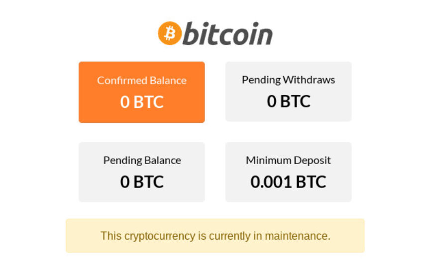
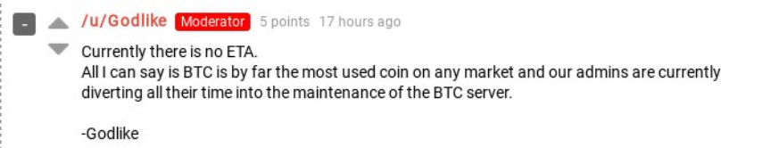
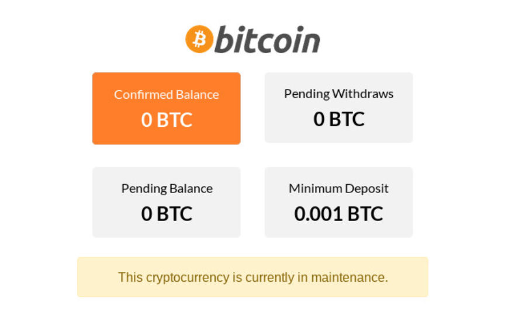
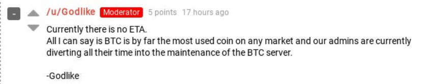

Nightmare Market Admin: Maintenance Ends "Tonight or Early Tomorrow"
~2 min read | Published on 2019-07-12, tagged Darkweb-Vendor, General-News using 350 words.
Users of Nightmare Market are experiencing difficulty depositing and withdrawing certain cryptocurrencies from the market. The issues, according to a Nightmare Market admin, are only temporary and will not result in any lost bitcoin or any other crytptocurrency. The payment system should be fixed within 48 hours.
Update: Bitcoin transactions are working again.
Users of Nightmare Market have been complaining about the inability to deposit or withdraw bitcoin and monero on the marketplace since 11 July. The Nightmare Market staff member who moderates the marketplace’s subdread has been responding to some of the complaints.
While answers from support are better than no answers at all, they are not the same as answers from marketplace admins.
An administrator of Nightmare Market said, in an encrypted chat, that the issues people are experiencing are due to some repairs. The repairs are unexpected repairs for those of us without knowledge of goes on behind the scenes.
“We are currently fixing some old issues with the [primarily bitcoin] payment system,” the admin said. For security reasons, the marketplace will not comment on the issue at least until after they fix the problem. However one Dread user pointed out that they had reported a bug with multisig payments a day or two prior to the current maintenance.
“…I reported to the support that the btc public key for multisig was not working, and they responded with it looks like a bug, he was referring it to the admins for fixing,” a user on Dread wrote in the comments section of a post about the payment issues.
The admin added, in the encrypted chat, that no users would lose any coins. All deposits and withdrawals will work as intended after the maintenance is complete. “This maintenance will be done shortly,” the admin added. “Either tonight or early tomorrow.”
They have also been conducting maintenance on their payment systems as a part of their redesigned market plan.
See here: Market Update: Nightmare Market Removes Payment ID for Monero Transactions
And here: Nightmare Market Update Brings Dark Mode, Speed Improvements, and Stability
Although the events might be disturbing for now, the maintenance should not last much longer.
Update: Bitcoin transactions are working again.
Users of Nightmare Market have been complaining about the inability to deposit or withdraw bitcoin and monero on the marketplace since 11 July. The Nightmare Market staff member who moderates the marketplace’s subdread has been responding to some of the complaints.
While answers from support are better than no answers at all, they are not the same as answers from marketplace admins.
An administrator of Nightmare Market said, in an encrypted chat, that the issues people are experiencing are due to some repairs. The repairs are unexpected repairs for those of us without knowledge of goes on behind the scenes.
“We are currently fixing some old issues with the [primarily bitcoin] payment system,” the admin said. For security reasons, the marketplace will not comment on the issue at least until after they fix the problem. However one Dread user pointed out that they had reported a bug with multisig payments a day or two prior to the current maintenance.
“…I reported to the support that the btc public key for multisig was not working, and they responded with it looks like a bug, he was referring it to the admins for fixing,” a user on Dread wrote in the comments section of a post about the payment issues.
The admin added, in the encrypted chat, that no users would lose any coins. All deposits and withdrawals will work as intended after the maintenance is complete. “This maintenance will be done shortly,” the admin added. “Either tonight or early tomorrow.”
They have also been conducting maintenance on their payment systems as a part of their redesigned market plan.
See here: Market Update: Nightmare Market Removes Payment ID for Monero Transactions
And here: Nightmare Market Update Brings Dark Mode, Speed Improvements, and Stability
Although the events might be disturbing for now, the maintenance should not last much longer.